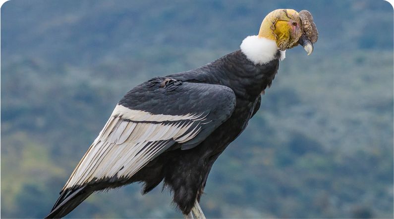
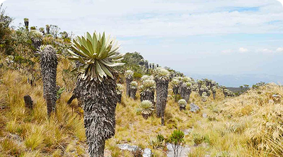
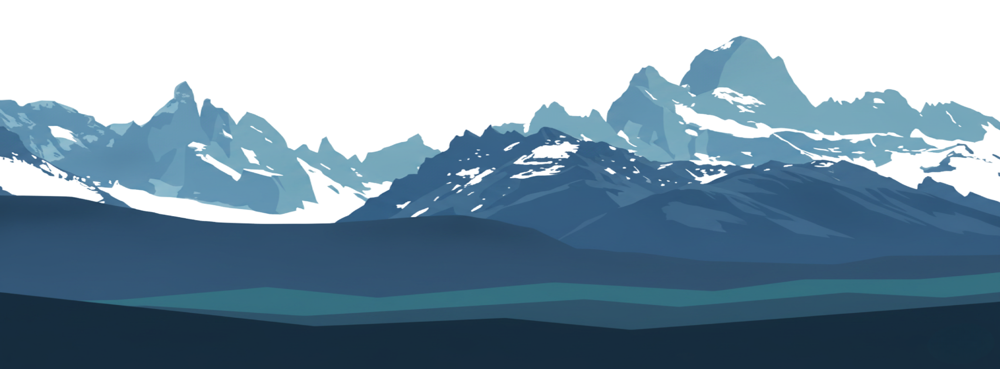

COLECIÓN DESTACADA
Especies del páramo

Cóndor andino
vultur grypus

Frailejón
Espeletia pycnophylla

Rana marsupial andina
Gastrotheca riobambae


vultur grypus

Espeletia pycnophylla
Gastrotheca riobambae
Visitas guiadas, muestras temporales y programas educativos disponibles este mes.
Recorrido interactivo por el ciclo del agua en los ecosistemas de la alta montaña, incluye maquetas y datos hídricos reales.
Exposición temporalMás de 200 especies vegetales y animales documentadas con fotografía científica, distribución geográfica y usos etnobotánicos.
Exposición permanente